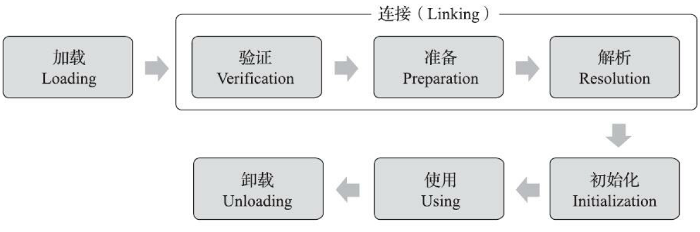
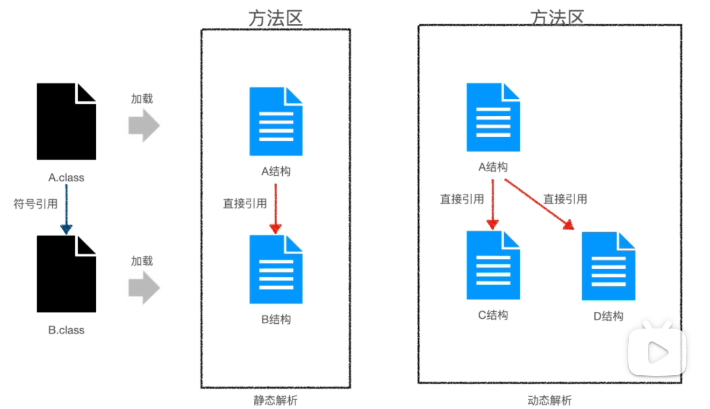
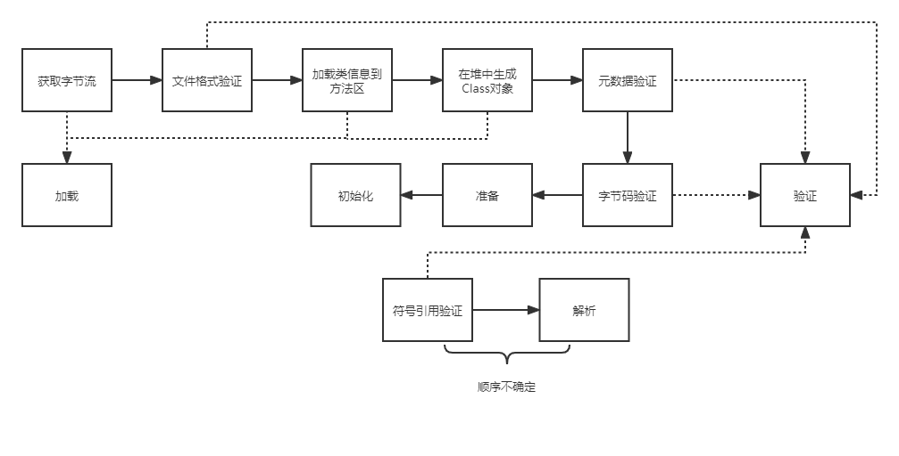
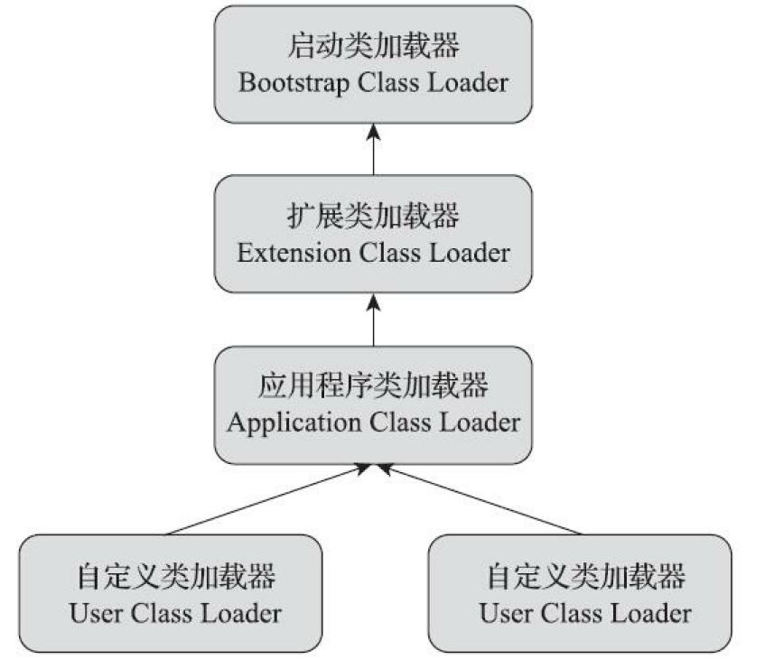
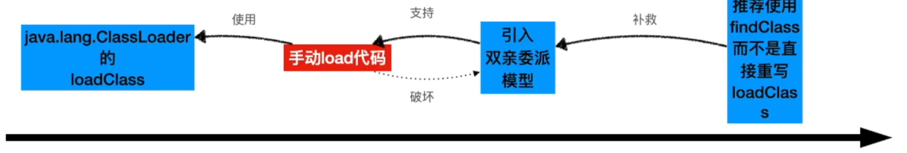
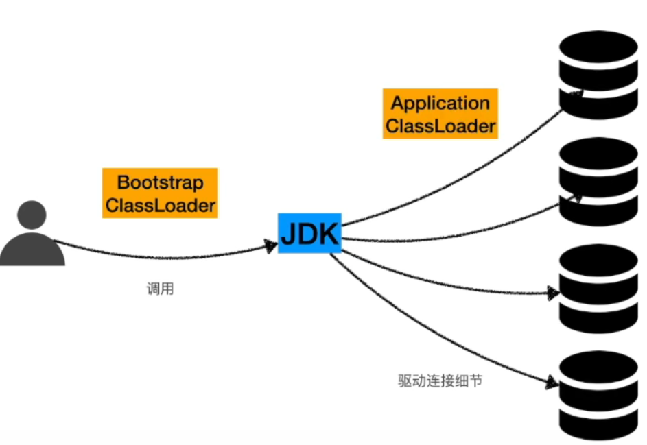
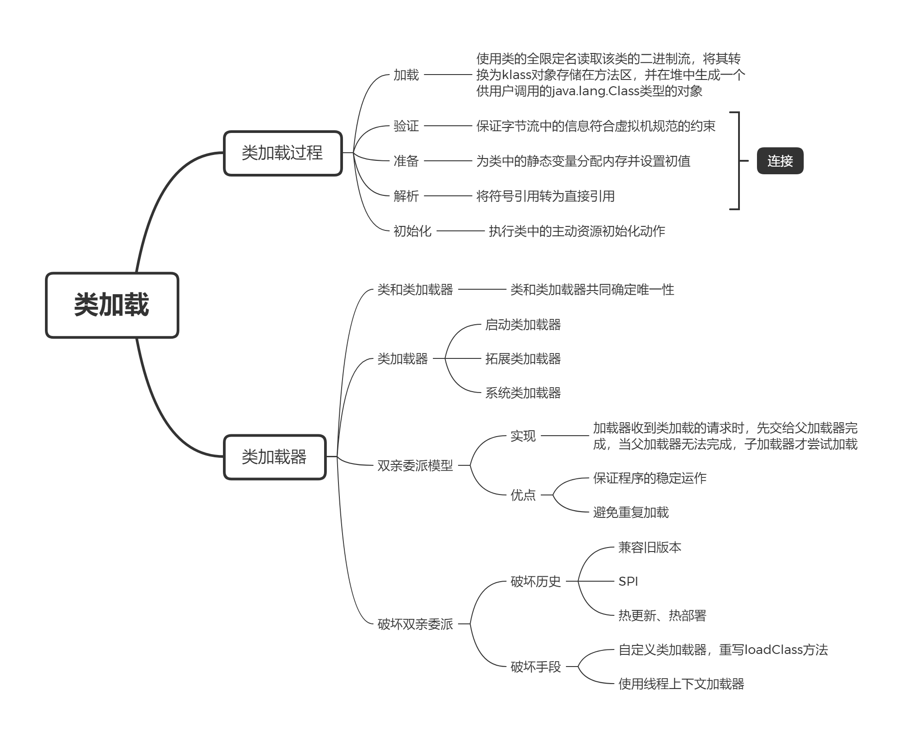

JVM系列(2) 类加载
1. 类加载过程
在程序运行期间，JVM 把描述类的数据从 class 文件加载到内存，并对数据进行校验、转换解析和初始化，最终形成被虚拟机直接使用的类型，这个过程被称为虚拟机的类加载机制。
一个类型从被加载开始，到被卸载出内存为止，其生命周期会经历加载、验证、准备、解析、初始化、使用和卸载七个阶段，其中验证、准备、解析三个过程合称为连接，如下图所示。

类加载包含上述加载、连接和初始化三个阶段，下面将逐个进行介绍。
1.1 加载
加载是使用类的全限定名读取该类的二进制流，将其转换为某种特定的数据结构存储在方法区，并在堆中生成一个供用户调用的 java.lang.Class 类型的对象的过程。
上面加粗的部分为加载的关键点：
- 类的二进制流不限定本地的 class 文件，可以来源于网络；
- 在方法区的数据结构即为 klass 对象；
- 堆中的 java.lang.Class 类型的对象是方法区的访问入口。
1.2 验证
验证是连接阶段的第一步，目的是保证字节流中的信息符合虚拟机规范的约束，大致上会分为以下阶段，并 分散在各个阶段 ：
- 文件格式验证：验证字节流是否符合 class 文件的格式，例如魔数、版本号等，文件格式验证发生在加载阶段获取字节流之后，验证通过才能完成加载；
- 元数据验证、字节码验证：验证字节流来确定程序语意正确性，并且不会危害虚拟机；
- 符号引用验证：检验该类是否缺少或者禁止访问它依赖的某些外部类、方法和字段等资源，主要目的是确保解析的正常执行，发生在解析阶段内。
1.3 准备
准备为类中的 静态变量 分配内存并设置初值，例如下面的静态变量，在准备阶段后 value 的值为 0，flag 的值为 false。
1 | public static int value = 1; |
但如果虚拟机判断为常量，则会给赋予常量值，例如：
1 | public static final int value = 123; // 准备阶段后值为123 |
1.4 解析
解析将 class 文件中与内存分布无关的符号引用（常量池的索引）转化为直接引用（内存地址）。解析在类加载中的顺序规范中没有明确规定，可以由虚拟机自行实现。
例如类 A 引用了类 B，在编译时，A 是无法得知 B 的地址的，故只能采用符号引用存储。当程序运行时触发 A 的类加载时，在解析阶段会发现 B 未被加载，将触发 B 的类加载，将类 B 加载到虚拟机中，此时就可以利用类 B 的实际地址来替换符号引用了。
但事情并没有这么简单，当 B 是个具体实现类时，会按照上述的过程执行，称为静态解析。如果 B 是个抽象类或者接口，当 B 有多个实现类例如 C、D、E，此时 A 无法明确具体实现类，将等到发生调用时，根据栈中的具体类型信息将符号引用替换为具体实现类的地址，这被称为动态解析。

1.5 初始化
执行类中的主动资源初始化动作，例如成员变量的赋值、静态变量的赋值、静态代码块等。
1 | Class Test { |
下图为类加载的流程，实线代表类加载的实际流程，虚线表示属于关系。

2. 类加载器
2.1 类与类加载器
加载过程中根据类限定名获得字节流的动作放到虚拟机外，由应用程序自行决定如何获取类，实现这个动作的代码被称为类加载器。
一个类由加载它的类加载器和类自身确定在虚拟机中的唯一性，每个类加载器都有自己的命名空间。换句话说，两个类相同的条件是，其 class 文件相同，并且被同一个类加载器加载。
2.2 双亲委派模型
对于 jdk 1.8 及以前的版本，绝大多数 Java 程序会使用下列 3 个系统提供的类加载器：
- Bootstrap Class Loader：启动类加载器，使用 C++ 实现，是虚拟机的一部分。负责加载 rt.jar 等 jdk 库；
- Extension Class Loader：拓展类加载器，负责加载
\lib\ext 目录下的类； - Application Class Loader：应用程序/系统类加载器，负责加载用户实现的类。
说明：虚拟机规范对类加载器只分为启动类加载器和非启动类加载器，上述分类是 hotspot 的实现。
除了上面 3 个类加载器，用户可以加入自定义的类加载器进行拓展。

上图各种类加载器的层次关系被称为 双亲委派模型（Parents Delegation Model），在 jdk 1.2 引入。其工作流程分为向上委托和向下委派，类加载器收到加载请求时，向上委托给父加载器加载，当父加载器无法完成加载，向下委派给子加载器尝试加载。
双亲委派模型的优点是例如 java.lang.Object 等核心类，无论被哪个类加载器加载，最终都会委派给启动类加载器，用于保证保证 Java 程序的正确运行。用户即使自定义了一个 java.lang.Object 类，对程序也无法造成影响。同时，类加载器都会向上委托加载，也避免了类的重复加载问题。
双亲委派的逻辑位于 java.lang.ClassLoader 的 loadClass 方法中：
1 | protected Class<?> loadClass(String name, boolean resolve) |
类加载器之间所谓的父子关系不是通过继承获得，更像是通过优先级决定，上层的类加载拥有更高的优先级，优先进行加载。双亲委派的双亲是翻译问题，从实际体现上来看，称为 父辈委派模型 更为直观贴切。
2.3 破坏双亲委派模型
在 Java 历史上，主要有 3 次对双亲委派模型的破坏。
第一次是为了兼容性，由于双亲委派模型在 jdk 1.2 后才引入，之前版本已经存在大量自定义类加载器。这些类加载器通过重写 loadClass 方法实现自己的加载逻辑，双亲委派的逻辑都在 loadClass 方法中，所以不会遵守后来版本才出现的 “规范”。对于 Java 团队做出了一定妥协，在 java.lang.ClassLoader 中添加 findClass 方法，并推荐用户重写该方法来实现类加载逻辑。

第二次是由于双亲委派的缺陷，一个典型例子是数据库的 Driver 接口，该接口定义在 jdk 源码中（rt.jar）由启动类加载器加载，但接口由数据库厂商实现， 实现类存放在 classpath 目录下，由系统类加载器加载，启动类加载器无法加载这些类，无法加载驱动。为此引入了线程上下文加载器，一般情况下就是系统类加载器，Driver 服务通过线程类加载器去加载类，这是一种父类加载器委托子类加载器的行为，违背了双亲委派模型。

第三次是用户对热替换、热部署的追求，限于篇幅在此处不进行介绍。
从上文，我们也知道了在 jdk 1.8 中破坏双亲委派的手段：
- 自定义类加载器，重写 loadClass 方法，不进行双亲委派机制
- 使用线程上下文加载器
除非有特殊的业务需求，否则不推荐破坏双亲委派模型。
3. 总结图
